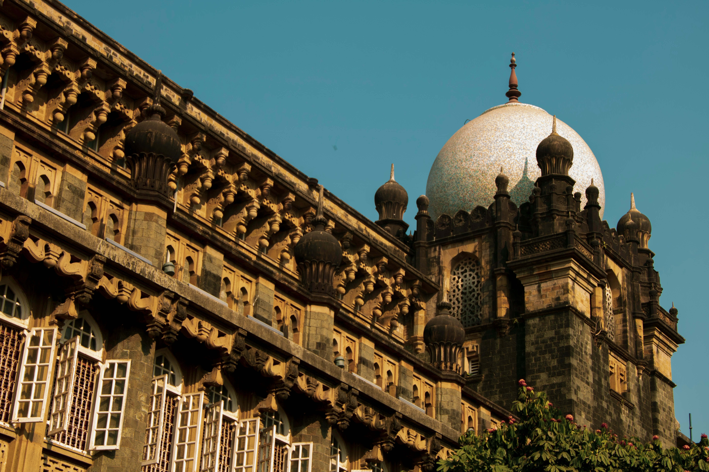
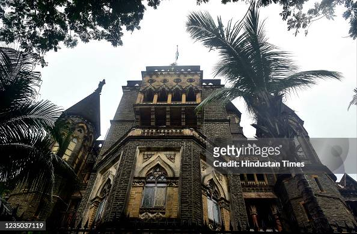
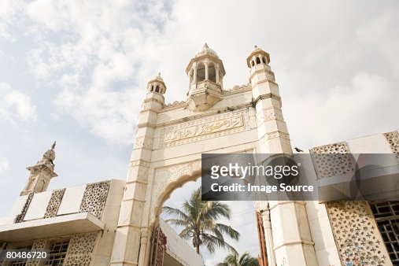

This is Mumbai for you
Ancient history and the modern world collide in Mumbai, a city that is big, noisy, and full of life. It's a glamorous city, home of the Bollywood film industry and the fashion capital of India. The city's population is estimated at more than 18 million people, and if you include the metropolitan area, more than 20 million.
Mumbai has a storied history that has seen a succession of Indian empires, then Portuguese rule, and subsequently British colonization before independence in the 20th century. From the many well-preserved relics of the British Raj, including the famous Gateway of India stone arch that was built in 1924, to the bright lights of Bollywood, Mumbai is an adventure waiting for you to discover.
Top 5 reasons to visit Mumbai
-
History
There are many ways you can check out the city's vast history. Elephanta Island, a Hindu temple, is made up of a series of caves with beautifully carved walls, and is a UNESCO World Heritage Site that dates back to about 450 AD.
-
Tropical Forests and Outdoor Escapes
You can experience the tropical forest in Sanjay Gandhi National Park, which takes up about 65 square miles in the northern part of the city. It is home to hundreds of species of birds, animals, including crocodiles and monkeys, in a lush forest environment. You can also escape to the outdoors for a walk along Girgaum Chowpatty beach, a popular pastime with locals.
-
Spectacular Architecture
You'll find Gothic Revival in buildings like the Chhatrapati Shivaji Terminus (formerly Victoria Terminus) built during the colonial era, and the second largest number of Art Deco buildings after Miami, with unique features like domes and minarets taken from Hindu and Islamic culture. There are sleek modern skyscrapers like the Bombay Stock Exchange and elements of many European styles, along with Indo-Saracenic architecture, an elaborately ornate style that uses elements of Gothic Revival, local Indian, and Islamic influences.
-
Shopping!
From Chor Bazaar - or "Thieves Market" - one of the biggest flea markets in India, to the designer boutiques of Kala Goda, Mumbai is full of fantastic shopping opportunities. You'll find international designers and locally produced clothing and jewelry, along with unique finds like the antique markets of Mutton Street where Bollywood set designers look for period pieces for their films. Remember to bargain for the best price.
-
The Food
This is a city that loves to eat and where you'll find everything from the traditional regional cuisines of India to European-style fare and modern innovations like Indian tacos (in a flatbread), Indo-European fusion, and much more.
What to do in Mumbai
-
Gateway of India: Your Journey Starts Here
An icon of the British rule in India, this 20th-century monument is considered the "Gateway to India". It exudes British royalty, and is a great place to start your tour of the city. Views of the epic Taj Mahal Palace Hotel are unmissable, and ferries abound for trips further afield. The most popular day trip takes you to Elephanta Island, where you can explore caves hidden in the landscape, and temples with some of the most impressive carvings in the country.

-
Chhatrapati Shivaji Terminus: Cultural Crossroads
Still active as the central train terminal in Mumbai, this historic railway station has been a gothic masterpiece since its construction in the late 19th century. Over three million commuters travel through the impressive space on a daily basis, and tourists join the throngs to take in the architecture as well. Design elements from other local monuments are found mixed together on this building, a notable combination of eastern and western influence that repeats itself throughout the country.

-
Chhatrapati Shivaji Maharaj Vastu Sangrahalaya: "CSMVS"
Yet another glorious building in Mumbai houses the city's most renowned museum. The halls are filled with a mixture of different exhibitions that cover the diverse history of the country through precious artifacts. Near this epic museum are also the Wellington Fountain and the Knesset Eliyahoo Synagogue - two gorgeous sites highlighting the combination of cultures present in this cosmopolitan city. The nearby National Gallery of Modern Art completes the city's world-class art collection.
 -
Mumbai High Court: Authority and Judgement
In the style of Mumbai's greatest architectural landmarks, the Bombay High Court is yet another grandiose gothic highlight of the city. The imposing building welcomes visitors into its equally assertive interior, where you are welcome to explore to your heart's content. Tourists are even allowed to attend cases, offering unique insight into India's judiciary system. Near the Court lies another great sight in the Rajabai Clock Tower, a historic relic modeled after London's Big Ben.
 -
Haji Ali Dargah: Pilgrimage on the Water
Off Mumbai's coast, this shrine floats mystically on a tiny island connected to the mainland only by a small causeway. Visitors can only visit a mosque and mausoleum when the tide is low, exposing the pathway. This makes reaching the gorgeous site all the more worth it, and on the island gorgeous and time-worn religious architecture awaits. Turn around for city views across the water, and appreciate the contrast between today and yesterday.

Where to Eat in Mumbai
For high-end dining, you can book a reservation at Indigo, housed in a former colonial building and offering a menu of Indo-European fusion that you can enjoy on the rooftop patio. Main dishes start at ₹780. If you want to experience authentic south Indian cuisine, look to Dakshinayan, featuring a menu of soups, homemade chutney, and traditional dishes starting at ₹90. The Yoga House Cafe is housed in a charming location by the water, with a healthy menu of salads, soups, and breads, with meals starting at ₹140.
When to visit Mumbai
Mumbai in July
₹9704
1 night at 3-star hotel
With a tropical climate, Mumbai is a true year-round destination. The most popular times to visit are during the drier period of the year between November and May, with cooler temperatures between December and February. June to September is monsoon season, with peak rainfall averaging over 500 inches in July.
How to get to Mumbai
Plane
International flights operate out of Chhatrapati Shivaji International Airport (BOM), which is sometimes called by its former name, Sahar International Airport. The airport is about 7.5 miles from the city center, and a taxi ride is the only direct way to get there. It should cost you about ₹120, and fares are prepaid.
Train
Mumbai is a hub for the Central Railway at the Chhatrapati Shivaji Terminus, and the Western Railway at Churchgate. Long distance trains may go through a number of stations, with connections to other Indian centers via Indian Railways.
Car
National Highway 3, National Highway 4, National Highway 8, National Highway 17, and National Highway 222 all connect with Mumbai. Be aware that you may have to pay a toll to enter the city.
Bus
Intercity buses run by Maharashtra State Road Transport Corporation connect Mumbai with other cities within Maharashtra, as well as neighboring states.
Where to Stay in Mumbai
Colaba
this is where you'll find many of the city's iconic landmarks like the Gateway of India and Taj Mahal Hotel. Along Colaba Causeway is where you'll find reasonably priced hotels and shopping.
Popular Neighborhoods in Mumbai
Marine Drive
from Nariman Point to Malabar Hill, strolling the promenade along the beach in the evening is a favorite pastime for locals and tourists alike. At night, the lights along the curve of the bay give the area the name Queen's Necklace. It's also where you'll find Mumbai's cache of Art Deco buildings.
Bandra
one of the many suburbs of the northern part of Mumbai, this is where you can bump into the Bollywood stars who churn out more than 1,000 movies per year. There are also many trendy restaurants, cafes, bars, and night clubs to explore.
Most Booked Hotels in Mumbai
Taj Mahal Tower, Mumbai
The Taj Mahal Palace, Mumbai
Trident Nariman Point
Fortune Park Lake City Thane - Itc Hotel Group
The Orchid Hotel Mumbai Vile Parlei
Sahara Star
How To Get Around Mumbai
Public Transportation
The Mumbai Suburban Railway is the primary form of public transportation, although it is probably best to avoid it during rush hour, when trains may be operating at up to 300 times capacity. The sleek, modern Mumbai Monorail is a good alternative, along with the Mumbai Metro subway. Public buses in Mumbai are run by B.E.S.T (Brihanmumbai Electric Supply and Transport Undertaking) and cover most of the city with over 390 routes, including accessible and air-conditioned services. You'll recognize B.E.S.T. buses by their bright red color, and fares are very reasonable at 1.25 miles for ₹8, and just over six miles for ₹18
Taxi
There are over 56,000 taxis in Mumbai, making it one of the preferred ways to get around the city. Rates start at ₹32.19 for one mile.
Car
Even though nearly 90 percent of Mumbai's citizens use public transportation, the traffic congestion is horrendous. If you prefer to travel by car just the same, it's recommended that you hire both a car and a driver to navigate the chaotic Mumbai traffic. Self-drive car rentals are available by the hour at ₹70, while a car with a driver will cost about ₹3,900 per day.The Cost of Living in New Delhi
Shopping Streets
There are many places to find great shopping opportunities in Mumbai, such as the boutiques of Colaba and Kala Ghoda, where you'll find international designers like Balenciaga, along with Indian brands like Janavi and NorBlack NorWhite at exclusive shops like Le Mill. If jewelry is what you're after look to Gem Palace at the Dhanraj Mahal complex. For bargain shopping, try Colaba Causeway, lined with many shops filled with locally made clothing and jewelry.
Groceries and Other
There are many grocery store chains in Mumbai, including Nature's Basket along with Hypercity, Reliance, D-Mart, and Big Bazaar, with well-stocked shelves and most include a prepared food section where you can sample many different dishes. A gallon of milk should cost about ₹187 and a dozen eggs will set you back about ₹60.
Other popular cities in Maharastra
Alibag
Kolhapur
Matheran
Pachgani
Amravati
Lonavala
Nagpur
Pune
Aurangabad
Mahabaleswar
Nasik
Shirdi